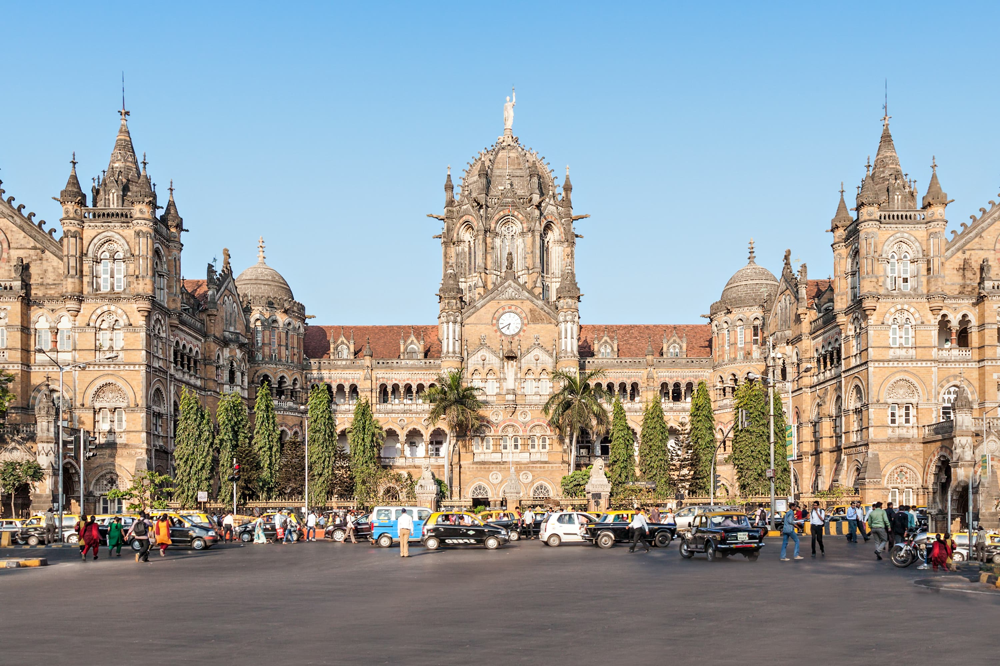

About Chhatrapati Shivaji Maharaj Terminus
Built in 1887, this railway station was originally called Victoria Terminus. Designed by British architect F.W. Stevens, it is a fusion of Victorian Gothic and Indian architectural styles. The station remains a significant transportation hub and a symbol of Mumbai’s heritage.
History
The station was built to commemorate Queen Victoria's Golden Jubilee. In 2004, it was declared a UNESCO World Heritage Site. It has witnessed significant events in Indian history, including being a site of the 2008 Mumbai attacks.